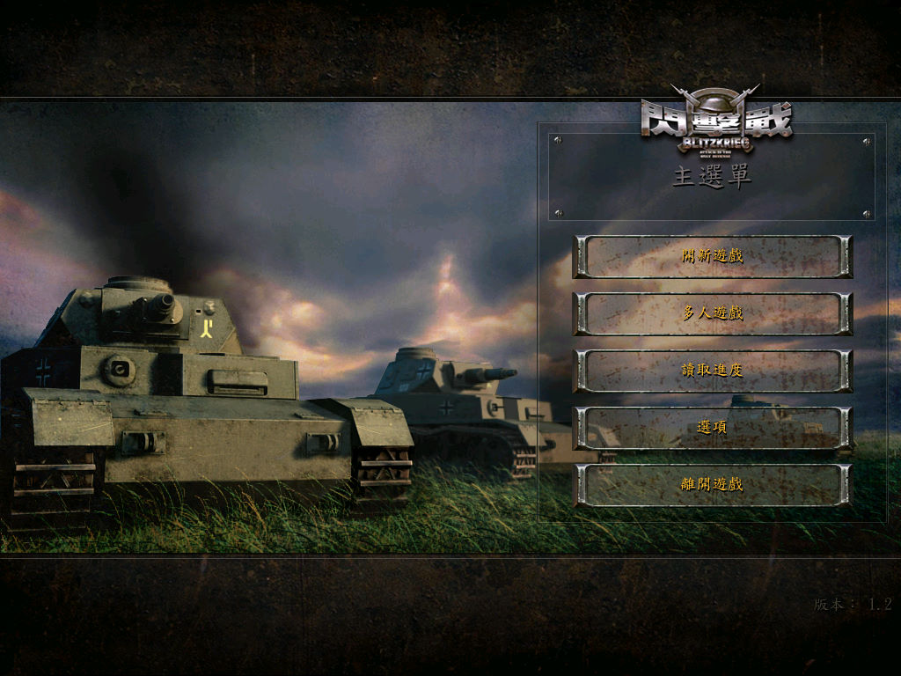
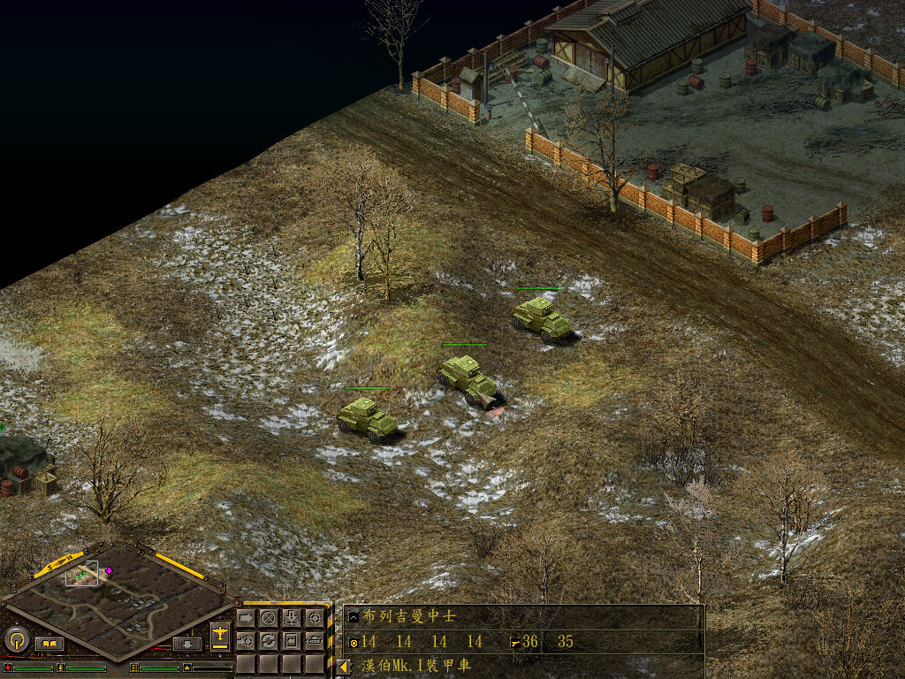

名稱：閃擊戰1／閃電戰1 (Blitzkrieg，中文／英文版)
簡介：Nival 2003年出品的即時戰術遊戲，由CDV代理發行。2004年分別推出「燃燒的地平線
（Burning Horizon）」以及「雷霆萬鈞（Rolling Thunder）」獨立資料片，由光譜
中文化並代理發行。2005年再推出「綠惡魔（Green Devils）」資料片 [待補]。


保護：主程式英文版無保護，繁中版為光碟SecuROM 4.84
資料片1英文版無保護，繁中版為光碟SecuROM 7.18
資料片2英文版無保護，繁中版為光碟SecuROM 7.18
資料片3英文版無保護
備註：資料片3綠惡魔安裝後，會直接合併到資料片2雷霆萬鈞裡。
檔案：nocd.rar = 主程式+資料片免光碟檔（中英文均可使用）
cht.rar = 主程式+資料片繁化檔